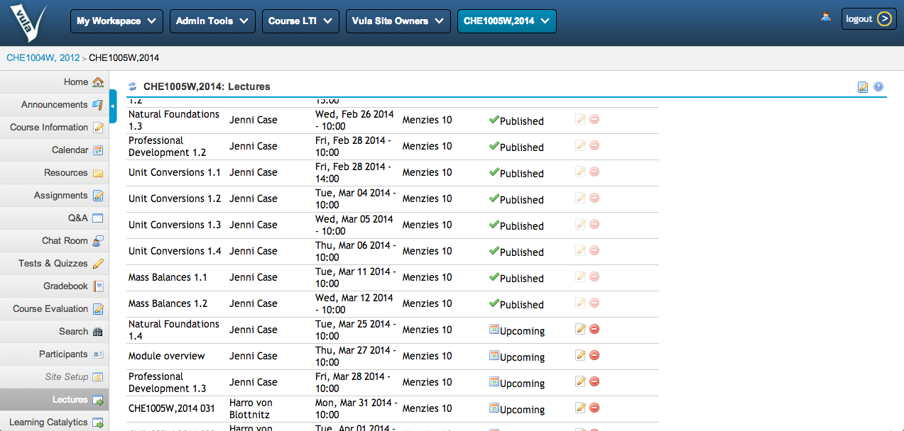
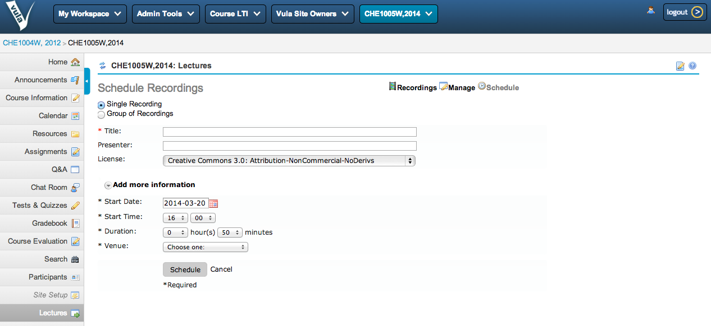
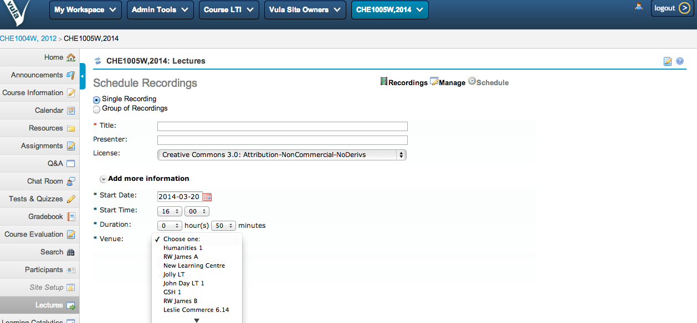

Scheduling and Recordings Management via LTI
Edmore Moyo ( CILT, UCT )
Harvard University, Opencast Unconference
March 2014
Learning Tools Interoperability
The principal concept of LTI is to establish a standard way of integrating rich learning applications with platforms like learning management systems, portals, or other educational environments.
~ http://www.imsglobal.org/toolsinteroperability2.cfm
UCT's Integration ...
- Vula (Sakai Instance) and Matterhorn

Recordings Management
Scheduling of Recordings
Scheduling of Recordings
How did we do it?
- "Trusted User" mode of LTI (MH-8316)
- Sakai UserProvider - http://bit.ly/1nGohcI
- UI Customisation
Different schools of thought
- Was LTI really meant for this kind of use case? or simply read only access?
- More standard solution: What about persisiting users into the DB instead? (MH-8955)
- Would the resolution of MH-8955 come with added user management complexity? - mapping to one matterhorn user?
We would love to hear about your approach.
Useful Links
-
UCT LTI tools :
http://bit.ly/1eVq44g
The End
Presented By
Edmore Moyo / @etmoyo / www.edmoremoyo.com
...